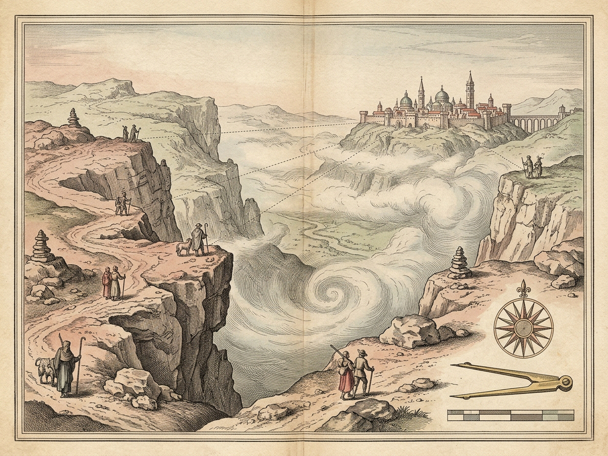
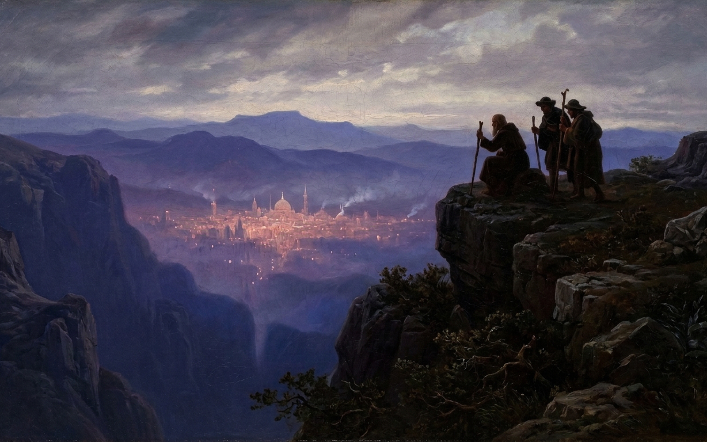

VIII · Cities & Names 5
IRENE
A Name for a City in the Distance
IRENE · MAGNETIC HORIZON
Windy Plateau Brink · 762m (Threshold 0.25)
Click crag watchers [1–4] or valley signal fires [5–8]
Hollow Distance
0.88 · Brink
Mist Sponge Parted
65%
Hollow Pink Glow
88%
Updraft Signals
0 · Ambiguous
Wind Gust Bellows · Milky Mist Sponge
Gust 58% · Parted 65%
Approach Dissolution Gate · Threshold 0.25
0.88 · IRENE
Watcher Vantage Ledge [1–4]
Western Cairn · 812m
Shepherd Shifting His Flock
Wind-Borne Signal Prism [5–8]
Bass Drums & Brass Trumpets
Festival Reading
Uprising Reading
Irene · Archival Survey & Twilight Plate Folio


Left: Engraved plateau escarpment & gorge survey (1600×1200) · Right: Watchers on the windy twilight brink (1600×1000)
[P] Toggle · [Z] 2x Zoom · [Esc] Close